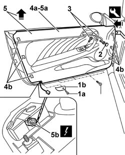

7005E08 FRONT SIDE DOOR INTERIOR PANEL R R
- Path
- Procedures > 70 FITTINGS > 7005 PASSENGER COMPARTMENT FRONT SIDE DOORS > 7005E FRONT SIDE DOOR TRIM > 7005E08 FRONT SIDE DOOR INTERIOR PANEL R R
- Kind
- repair procedure (removal / refitting; the operation number is the code)
- Applies to
- all engines; all production periods
- Interactive page
- https://sloeber94.github.io/elrnDB-aGt/en/#/125001787
Applies to: all engines; all production periods
 Removing
Removing
 Refitting
RefittingOp. 7005E12 CORNER COVER OF ONE FRONT SIDE DOOR, LH OR RH R R
Op. 7005C44 INTERIOR HANDLE PANEL - R R
(for driver's door)
Op. 7005M12 PASSENGER SIDE FRONT DOOR ELECTRICALLY OPERATED WINDOW SWITCH - R R
(for passenger door)
1. Undo the bolt (1a) and remove the lens cover (1b) for the door open warning light.
2. Carefully release the bolt cover.
3. Unscrew the panel retaining bolts.
4. Release the panel (4a) from the inner retainers (4b) using the special tool.
 | Name | Country |
|---|---|---|
4 | Scraper blade | 1.823.015.000 |
5. Lift up the panel (5a) and move it aside, then disconnect the connector (5b) for the doors open warning light.
Name | Connector | |
|---|---|---|
5b | Front driver's door light | See G51 FRONT DRIVER'S DOOR LIGHT |
Name | Connector | |
|---|---|---|
5b | Front passenger door light | See G52 FRONT RIGHT DOOR LIGHT |

Applies to: all engines; all production periods
Refitting
RemovingCheck that the panel is undamaged and that the retainers are undamaged and correctly positioned.
Connect the connector for the doors open warning light.
Name | Connector | |
|---|---|---|
- | Front driver's door light | See G51 FRONT DRIVER'S DOOR LIGHT |
Name | Connector | |
|---|---|---|
- | Front passenger door light | See G52 FRONT RIGHT DOOR LIGHT |
Fit the panel.
Fit the panel engaging the internal retainers.
Tighten the panel fixing bolts.
Fit the bolt cover.
Tighten the bolt fixing the lens cover for the doors open warning light.
Op. 7005M12 PASSENGER SIDE FRONT DOOR ELECTRICALLY OPERATED WINDOW SWITCH - R R
(for passenger door)
(for driver's door)
Op. 7005C44 INTERIOR HANDLE PANEL - R R
Op. 7005E12 CORNER COVER OF ONE FRONT SIDE DOOR, LH OR RH R R
Topics linked from this page (4)
- 7005C44 INTERIOR HANDLE PANEL - R R
- 7005E12 CORNER COVER OF ONE FRONT SIDE DOOR, LH OR RH R R
- 7005M12 PASSENGER SIDE FRONT DOOR ELECTRICALLY OPERATED WINDOW SWITCH - R R
- 7005M14 SWITCH UNIT CONTROLLING ELECTRIC WINDOWS REAR VIEW MIRRORS AND DOOR LOCK ON DRIVERS SIDE FRONT DOOR R R
Topics that link to this page (20)
- S62 FRONT DOORS CREAKING
- 5505B11 FRONT DOOR WIRING - R R
- 5570T90 FRONT SPEAKER - R R
- 5580T10 BOSE SOUND SYSTEM FRONT SPEAKER (ONE), LH OR RH - R R
- 7005A05 FRONT SIDE DOOR WATER GUARD PROTECTION R R OR ARRANGE
- 7005A28 FRONT SIDE DOOR LIMITER- REPAIR OR REPLACE
- 7005C11 FRONT SIDE DOOR OUTSIDE HANDLE R R
- 7005C15 FRONT SIDE DOOR LOCK BARREL (IN HANDLE) - R+R
- 7005C43 LINK CONNECTING FRONT SIDE DOOR BARRELS/CATCH - R+R
- 7005C53 INTERIOR OPENING HANDLE - R R
- 7005C55 FRONT SIDE DOOR INTERIOR OPENING RETURN DEVICE (WITH HANDLE) - R+R FOR REPAIR OR REPLACEMENT
- 7005D15 FRONT SIDE DOOR DESCENDING WINDOW GLASS R R
- 7005D25 FRONT DOOR WINDOW REAR GUIDE - R R
- 7005D26 FRONT SIDE DESCENDING WINDOW GLASS SCRAPER (OUTER) R R
- 7005E10 FRONT SIDE DOOR INNER PANEL - R R FOR REPLACEMENT
- 7005M21 FRONT SIDE DOOR ELECTRICALLY OPERATED WINDOW - R R
- 7005M40 FRONT ELECTRIC WINDOW SYSTEM ECU - R+R FOLLOWING ELECTRICAL WIRING CHECK
- 7005N21 FRONT SIDE DOOR LOCK MOTOR-LOCK ASSEMBLEY-R R
- 7040E70 L/H OR R/H DOOR OPEN INDICATOR LIGHT (ONE) - R+R
- 7205E36 STRIPPING FRONT SIDE DOOR